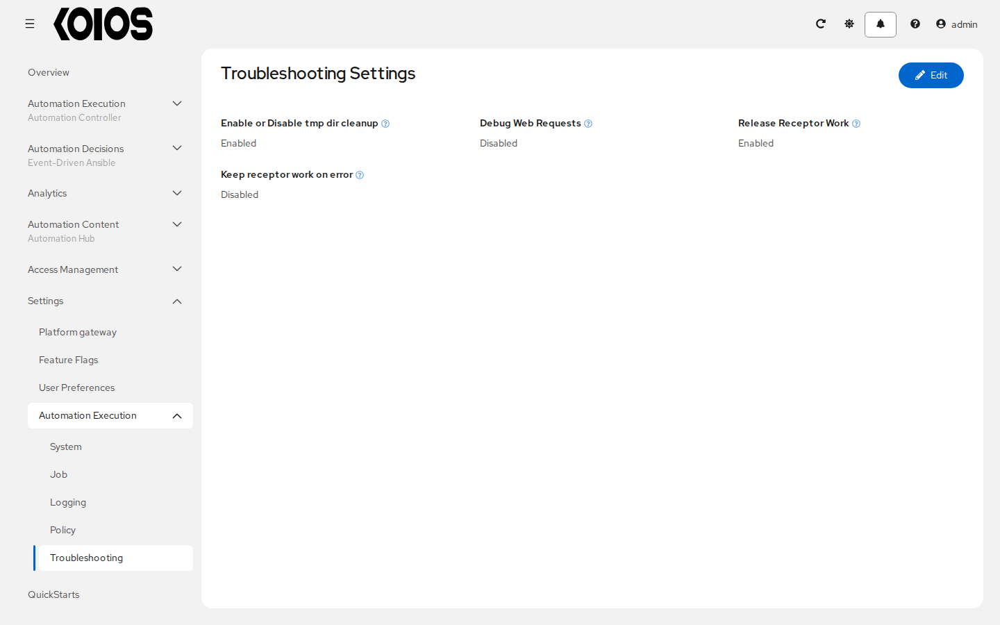
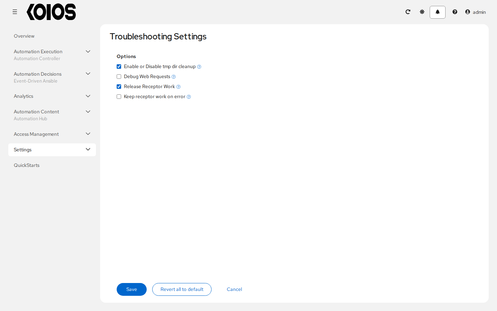

23. Troubleshooting Automation Controller
Start with the job’s Output and Details under Automation Execution > Jobs, then check the selected inventory, project, execution environment and instance group. A controller job, a container group pod and a remote execution node are different layers; diagnose the layer that reports the failure.
23.1. Troubleshooting settings
As a platform administrator, open Settings > Automation Execution > Troubleshooting and click Edit.

The current settings are check boxes:
Enable or Disable tmp dir cleanup (
AWX_CLEANUP_PATHS): selected by default. Controls removal of the controller’s temporary job staging paths; it is not a global cleanup of Kubernetes storage.Debug Web Requests (
AWX_REQUEST_PROFILE): enables request timing diagnostics; it is not a replacement for job verbosity.Release Receptor Work (
RECEPTOR_RELEASE_WORK): selected by default. Releases Receptor work after processing. Clearing it retains work for investigation and can retain container group job pods; it does not recover artifacts already removed.Keep receptor work on error (
RECEPTOR_KEEP_WORK_ON_ERROR): retains work when the worker detects anerrorresult. This does not mean every playbookfailedresult is retained.

Click Save to apply the settings or Cancel to discard edits. Enable retention only for a bounded investigation and restore cleanup afterwards; retained work can include inventory, credential material and large job artifacts. Do not share those files or unredacted pod logs.
23.2. Deployment-managed settings
The KoiosPlatform passes custom settings to each component as setting/value pairs: spec.controller.extra_settings for automation controller and spec.extra_settings for the platform gateway. The operator applies them and rolls out the affected pods. Do not edit settings files inside pods or on cluster hosts; reconciliation replaces generated configuration.
Controller values are rendered as Python expressions. Quote string values inside the YAML string, while numeric and boolean expressions use Python syntax. For example, merge the following into the existing resource rather than replacing its whole spec:
spec:
controller:
extra_settings:
- setting: MAX_PAGE_SIZE
value: "500"
- setting: LOG_AGGREGATOR_LEVEL
value: "'DEBUG'"
Settings defined this way are read-only in the controller UI and API. Change their declaration in the KoiosPlatform instead. Gateway spec.extra_settings values are serialized by the platform operator; do not assume controller expression quoting applies to them. See KoiosPlatform.
Authentication providers are configured in the platform gateway, not with controller authentication settings; see Authentication methods.
23.3. Collect diagnostic information
Use the intended isolated kubeconfig and explicit context. Begin with status and resource names, without dumping the complete platform configuration or Secrets:
kubectl --context <context> -n <namespace> get koiosplatform <platform> -o jsonpath='{.status.conditions}'
kubectl --context <context> -n <namespace> get pods
kubectl --context <context> -n <namespace> get deployments
On OpenShift, oc can be used instead of kubectl. Inspect the affected pod’s status and events for scheduling, image-pull, probe or resource failures. Inspect a bounded amount of the relevant container’s logs, for example:
kubectl --context <context> -n <namespace> logs deploy/<platform>-controller-task -c <platform>-controller-task --tail=100
kubectl --context <context> -n <namespace> logs deploy/<platform>-controller-web -c <platform>-controller-web --tail=100
Identify the operator Deployment and container in its own namespace before collecting its logs. Review and redact output before sharing it: logs, events, inventory and request data may contain sensitive values. A broad namespace inspection archive can collect sensitive resources and should not be attached unreviewed to an issue.
23.4. Connection failures
Check the job’s Machine credential, remote username, inventory address and any ansible_host or connection variables. For SSH-based automation, it is the execution node or job pod that needs network access to the managed host. Successful SSH from an administrator’s workstation does not establish connectivity from the job’s execution environment. Other Ansible connection plugins have their own requirements.
Also verify DNS, routing, firewalls, the required ports and SSH host keys from the execution location. The controller web pod does not execute the playbook.
23.5. Login and TLS failures
Users log in through the platform gateway Route or Ingress. Configure the public address and certificates in the KoiosPlatform; a controller setting does not change how the gateway serves logins. For authentication errors, check the gateway and the selected authentication method rather than changing users with controller management commands. See Authentication methods and KoiosPlatform.
23.6. Playbook failures and missing playbooks
Verify that the project sync succeeded and the job template selects the expected project revision, playbook and execution environment. Playbooks must be valid YAML that Ansible can parse. Include required collections and libraries in the project dependencies or execution environment as appropriate; installing them on a controller host does not make them available to a job container.
The play’s hosts expression can target any matching inventory hosts or groups; it does not have to be all. The template’s Limit narrows that selection further. Check spelling, case, group names and the selected inventory when no hosts match.
If a playbook is absent from the template’s Playbook selector, check the project revision and successful sync, then its file name and contents. See Projects and Job Templates.
23.7. Jobs that remain pending or waiting
Check the job’s Details and explanatory status, then distinguish controller scheduling from Kubernetes pod scheduling:
Verify project and inventory update dependencies, workflow approvals and any concurrency restrictions.
Under Automation Execution > Infrastructure > Instance Groups, inspect the group selected for the job and its job/fork limits. For remote execution, verify that a healthy, enabled execution instance has available capacity.
For container groups, inspect the job pod’s phase and events. Resource requests, quotas, admission policies and image-pull failures can prevent a pod from starting even when controller scheduling has assigned the job.
Check controller task pod readiness and resource pressure. Increasing playbook forks does not create controller or cluster capacity.
If the cause is still unclear, collect the bounded diagnostics described in Collect diagnostic information.
23.8. Cancel a job
Open the running job under Automation Execution > Jobs and use Cancel job. Cancellation asks the execution worker to stop the job; it does not roll back changes already made on managed hosts. Remote operations already dispatched can continue independently. The canceled job remains in job history, and shared project or inventory updates are not automatically deleted.
23.9. External databases
A new platform needs empty databases. Do not point a new deployment at the databases of another platform, current or removed. Use the platform’s supported database configuration and backup/restore workflow; see KoiosPlatform.
23.10. Cloud inventories and private addresses
For an Amazon EC2 inventory source, configure the credential and source as described in Credential Types and Inventory Sources. Use the inventory plugin’s options rather than the old EC2 script option vpc_destination_variable.
Where a supported inventory plugin is used, instance discovery depends on its credentials, regions and filters, not on the presence of an Elastic IP. For a compatible amazon.aws.aws_ec2 plugin configuration, compose.ansible_host: private_ip_address selects the private connection address. The execution node or pod must be able to reach that address; the controller does not need to reside inside the VPC.